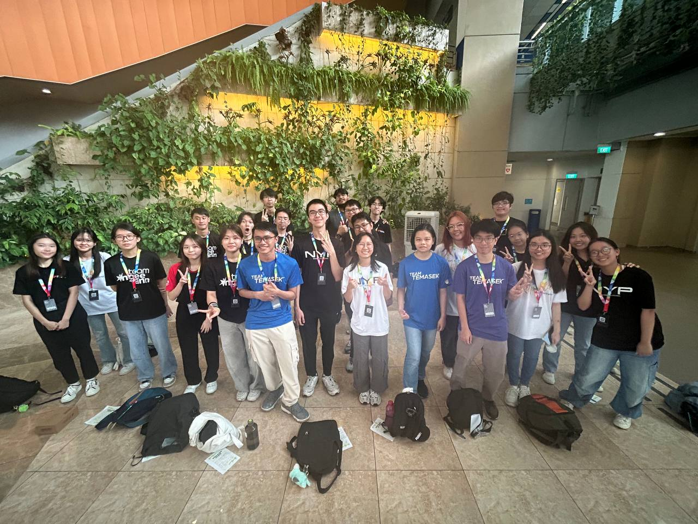
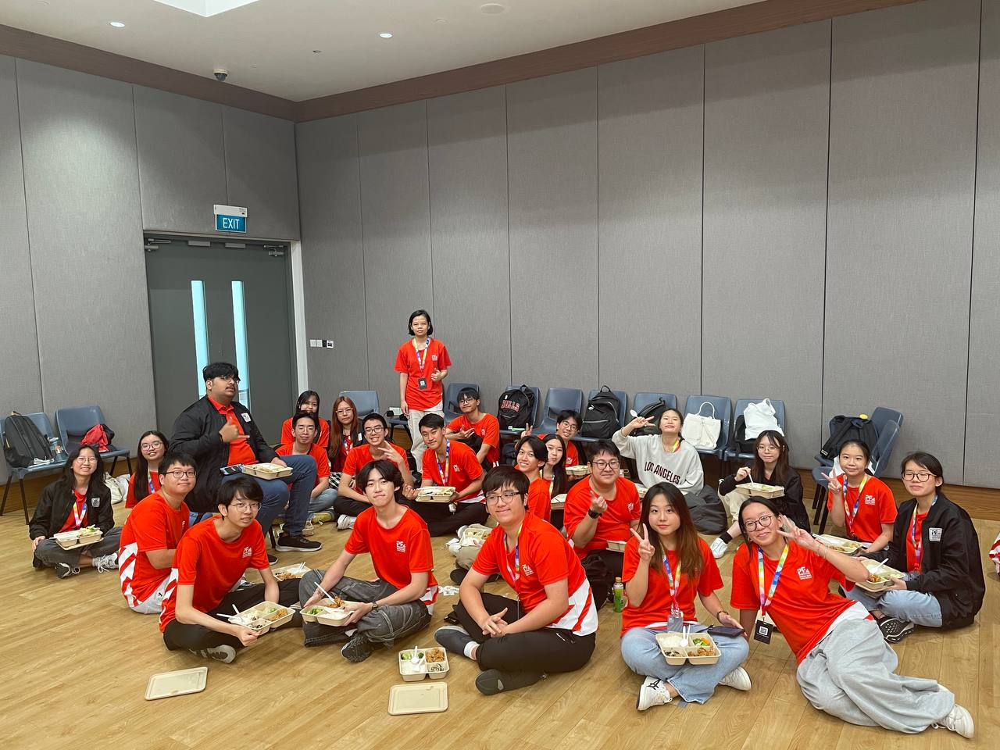

Polytechnic Forum 2024
TLDR;
- Attended multiple Minister Dialogue sessions
- Took part in activities like TD Quest & Table-Top Exercise
- Practiced reflectivity and visited CSIT (Digital Defence pillar)
- Community Action Projects at Heartbeat Bedok

During my semester break in September to October, I took part in the Polytechnic Forum 2024. The forum's theme of the year is Total Defence (TD), celebrating 40 years of TD in Singapore.
Day 1: TD Quest
We kicked off the first day with an official welcome by Dr Lina Chong. It was planned as a survival race, where groups had to go to different landmarks of Singapore which acted as checkpoints. Landmarks such as the Padang at Marina Bay and Fort Canning Hill all had their own unique set of challenges which represented a pillar of TD. Despite the physical challenges and time constraints, this survival race has definitely helped me gain more understanding of the different pillars of TD.
Day 2 & 3: Crisis Simulation
On the second day, we had a Table-Top Exercise, where we learnt how to respond to a crisis involving food shortages and mass disruptions. The third day was a rare and exciting day as we ventured into the Seletar Army Camp. We had hands-on experience ranging from trying the weapons they use, eating food rations, going through a completely dark room with night vision goggles, and even riding a boat they use for transporting cargo.
CSIT Visit
On the following week, we had our residential stay at D'Resort! As I was part of a Digital Defence group, I had the opportunity to visit CSIT. During the visit, we got to learn how to do simple threat hunting and go see a demo of mobile malware analysis. I was able to learn much more from this learning journey due to the background of my diploma course - Cybersecurity & Digital Forensics.
Community Action & Closing
To start off day 5, we went on a Community Action Project at Heartbeat Bedok, encouraging the public to pledge to Total Defence. My group did a skit showing what would happen with and without TD, focusing on digital literacy.
On day 6, we had Minister Zaqy Mohamad for the closing ceremony of the forum. Through this forum, I learnt many valuable lessons and had the chance to work on my soft skills, especially leadership skills.
